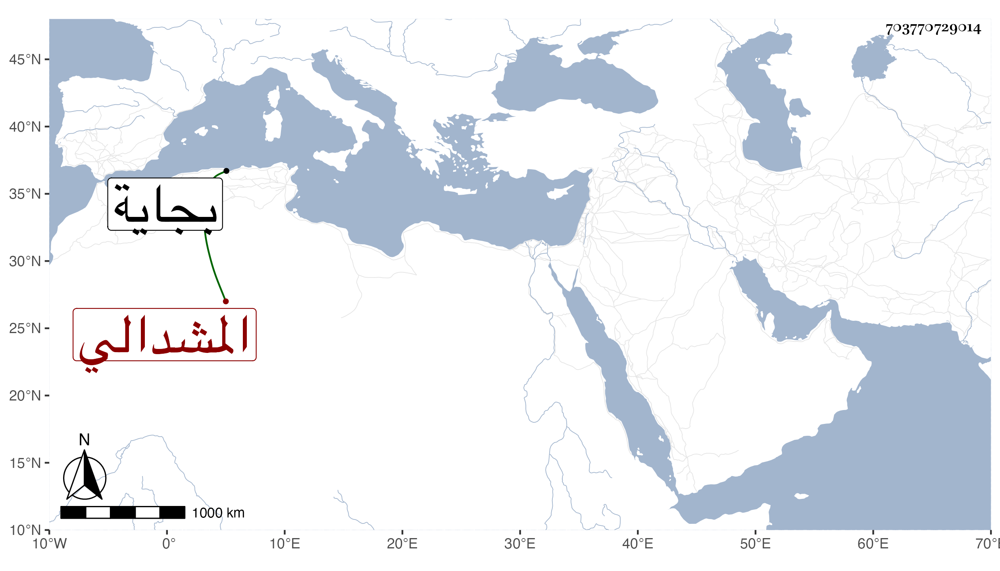

0902Sakhawi.DawLamic.ITO20230111-ara1.EIS1600.703770729014
Biography ID: 703770729014
467
محمد المشدالي شقيق الذي قبله وهو الأكبر . أخذ عن أبيه وغيره ، وكان متقدما في العلم تصدر في بجاية وانتفع به جماعة منهم سليمان بن يوسف الحسناوي وكان أتم عقلا من أخيه وأصح فهما وأحفظ مع اشتراكهما في التخليط ، وخرج قاصدا الحج فمات في تيه بني إسرائيل في ليلة العشرين من المحرم سنة تسع وخمسين . أرخه ابن عزم ووصفه بالفقيه وقال غيره أنه مات قبل الحج بعد أخيه وبالجملة فكل منهما مات في حياة أبيه .
